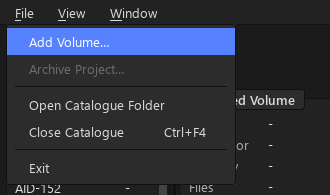
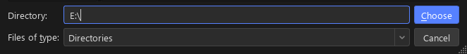
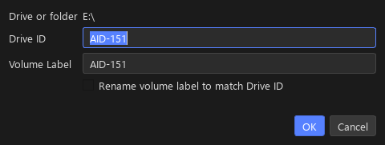
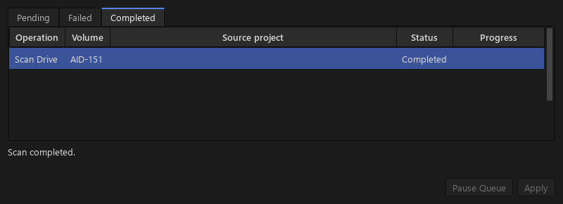

Add a drive and run its first scan
Do this once for each new archive HDD, even an empty one. If the drive already has a completed scan in this catalogue, go straight to Archive a project.
1. Open the catalogue
On Home, choose Open Catalogue…. If this is your first catalogue, choose Create Empty Catalogue… and give it a name. Use the same catalogue for all the drives that will hold the project.
2. Select the drive
Connect the HDD and choose File → Add Volume….

In Choose Volume to Scan, choose the drive root, such as E:\. The root is the top level you see when you open the drive. Selecting a subfolder such as E:\Projects creates a folder catalogue entry that cannot receive archived projects.

3. Confirm its drive ID
Check the path and give the drive a unique ID, such as AID-151. To keep its current Windows label, clear Rename volume label to match Drive ID and leave the label as shown. Click OK.

4. Start the initial scan
JVVV adds Scan Drive to the queue automatically. Click Apply beside the catalogue name. To scan several new drives, add each one first and then click Apply All.
5. Check the result
Open Queue Manager → Completed and look for the drive’s Scan Drive row. Zero files is a normal result for an empty HDD. On a writable archive drive, JVVV normally creates .jvvv-drive.json at the root to recognise the drive when it is reconnected.

You can now archive a project to this drive. If you queue the archive while the initial scan is still pending, JVVV waits for the scan before writing the project.